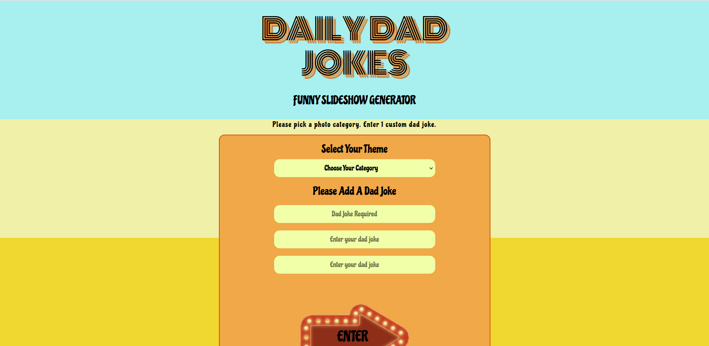

I am a Software Engineer that changed career paths from being a Freelance Clarinetist. My skills as a Software Engineer along with a variety of skills I have learned as a Clarinetist allows me to be flexbile and adapt to a variety of situations with ease.

This project was my first group collaboration with Tiffany Shimizu Kevin Weber, Felicia Nemet, and myself. This website incorporates 2 API calls (from icanhazdadjoke.com and unsplash.com) to create a slideshow of images accompanied with Dad Jokes.